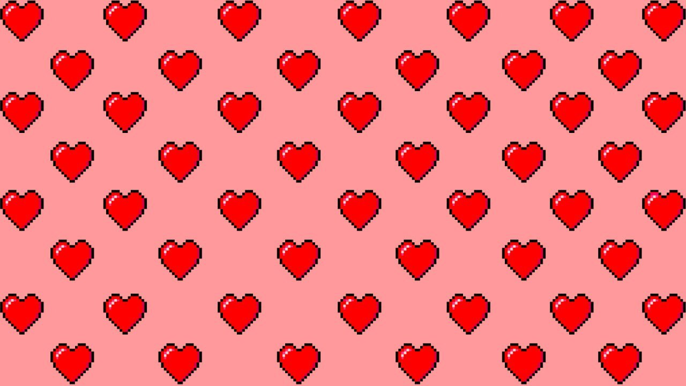

С 8 МАРТА!!!
С женским днём дам поздравляем!
От души мы вам желаем:
Позитива и успеха,
Доброты, улыбок, смеха.
Чтобы жизнь была, как в сказке,
И всегда в цветной окраске,
Чтоб сбывались все мечты.
Нежности вам, красоты!
Кать, спешу поздравить тебя с твоим женским днем!!! Ты - воплощение красоты и нежности, и твоя улыбка способна светить даже в самые пасмурные дни. Каждое мгновение, проведенное с тобой, наполняет мою жизнь радостью. Ты не только удивительная девушка, но и невероятно умная и талантливая личность. Пусть каждый день приносит тебе только позитивные эмоции. Ты заслуживаешь только самого лучшего и я надеюсь, что этот день принесет тебе радость и множество приятных сюрпризов. С любовью желаю тебе не только в этот день, но и всегда быть окруженной вниманием и заботой.
С праздником, любимая Катюша!